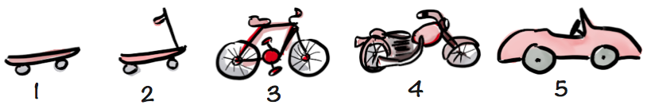

Project steps¶
As with any large scale projects, this project has been split in various steps. Those steps are ranging from a simple Hardware as Service facility to a full blown Computation as a Service.
As discussed in length by Henrik Kniberg on his blog, we do not want to deliver this:
but this:

Step 1 - The skateboard (current step)¶
We are providing access to specific nodes in the Cluster. each node has been installed manually. Therefore, it would be quite inconvenient to have bookings too often. Furthermore, this process is really error prone since each installation has been manually made on each node.
Step 2 - The scooter¶
On top of what we are currently providing, we want to:
automate the process of installing the software packages (which is not visible to our customers)
automatically mount their home directory and a shared folder of their choosing (added value to our customers)
Step 3 - The bicycle¶
With this step, we want to automate a bit further the system. We want to add:
provide a transparent way for our customers to book their node in advance (added value to our customers)
provide notifications to our customers upon
upcoming reservations
upcoming decommissioning of the nodes they are using
Step 4 - The motorcycle¶
Once the full automation has been reached, we will be able to tackle topics like the balancing of resources across nodes.
Step 5 - The car¶
Once all the previous goals have been achieved, we’ll be able to address topics like Containers as a Service.